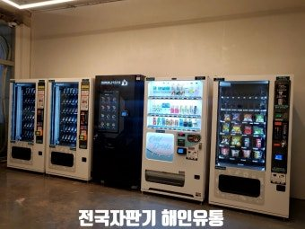
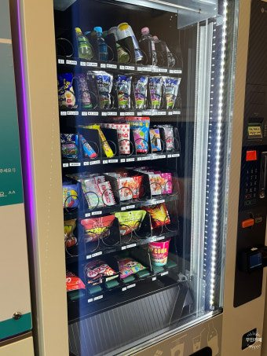
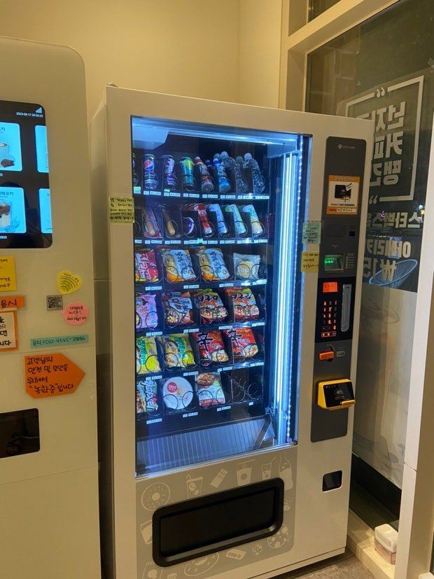
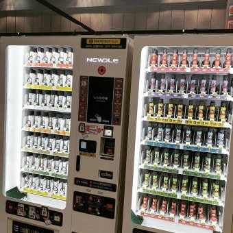
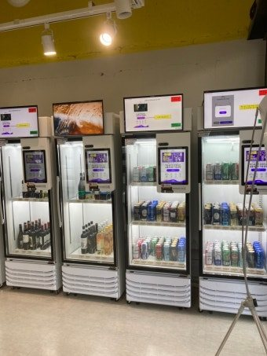
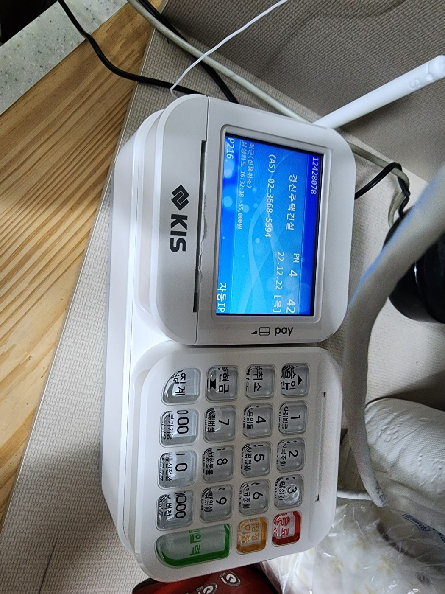

설치 후기
H포스가 직접 설치한 전국 포스기·카드단말기·키오스크·무인자판기 현장 기록입니다. (전체 117건 · 1/12 페이지)

용인 멀티자판기 설치 완료 — 기흥·수지 오피스 무인 매장 세팅
경기 용인 매장에 멀티자판기 설치 완료. 24시간 무인 운영·카드 간편결제, 설치비 무료. 입지 분석과 매출 전략까지 함께 안내합니다.

청주 커피자판기 설치 완료 — 흥덕구 가경동 사무실 무인 카페 구축
충북 청주 매장에 커피자판기 설치 완료. 24시간 무인 운영·카드 간편결제, 설치비 무료. 입지 분석과 매출 전략까지 함께 안내합니다.

노원구 음료자판기 설치 완료 — 상계·중계 학원가 무인 판매 세팅
서울 노원구 매장에 음료자판기 설치 완료. 24시간 무인 운영·카드 간편결제, 설치비 무료. 입지 분석과 매출 전략까지 함께 안내합니다.

군산 무인자판기 설치 완료 — 수송동 무인매장 무인사업 시작
전북 군산 매장에 무인자판기 설치 완료. 24시간 무인 운영·카드 간편결제, 설치비 무료. 입지 분석과 매출 전략까지 함께 안내합니다.

세종 무인자판기 설치 완료 — 정부세종청사 인근 공공기관 무인 판매 구축
세종 매장에 무인자판기 설치 완료. 24시간 무인 운영·카드 간편결제, 설치비 무료. 입지 분석과 매출 전략까지 함께 안내합니다.

부산진구 포스기 설치 완료 — 서면 상권 매장 통합 관리 구축
부산 부산진구 매장에 포스기(POS) 설치 완료. 매출·재고·직원 관리까지 한 번에, 설치비 무료·평균 4일 이내 방문 설치.

수성구 포스기 설치 완료 — 범어·만촌 상권 매출 관리 세팅
대구 수성구 매장에 포스기(POS) 설치 완료. 매출·재고·직원 관리까지 한 번에, 설치비 무료·평균 4일 이내 방문 설치.

남동구 포스기 설치 완료 — 구월·논현 상권 포스 구축
인천 남동구 매장에 포스기(POS) 설치 완료. 매출·재고·직원 관리까지 한 번에, 설치비 무료·평균 4일 이내 방문 설치.

여주 포스기 설치 완료 — 여흥·중앙동 상권 포스 세팅
경기 여주 매장에 포스기(POS) 설치 완료. 매출·재고·직원 관리까지 한 번에, 설치비 무료·평균 4일 이내 방문 설치.

문경 포스기 설치 완료 — 점촌 상권 매장 통합 관리 구축
경북 문경 매장에 포스기(POS) 설치 완료. 매출·재고·직원 관리까지 한 번에, 설치비 무료·평균 4일 이내 방문 설치.